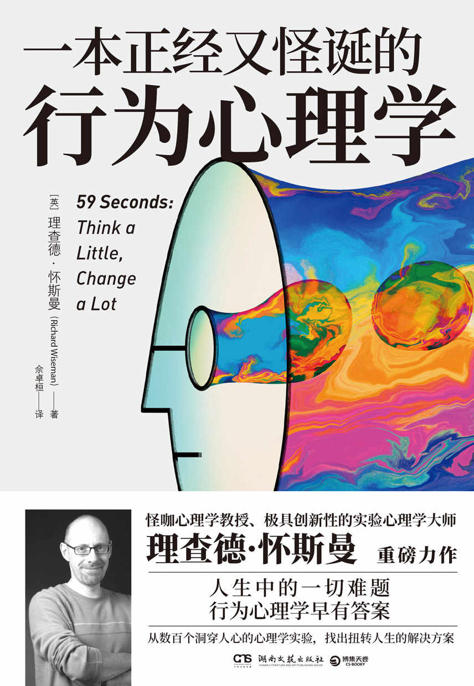
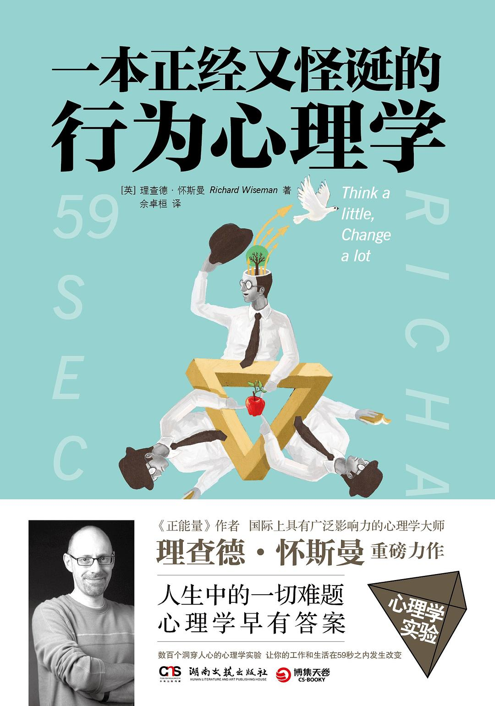

|  |
一本正经又怪诞的行为心理学 |
引言
◎自控力好的人更容易成功？
1953年，一个研究团队在耶鲁大学毕业生中做了一个抽样调查，询问他们是否写下了未来人生的目标。二十年后，研究人员追踪当年那些接受调查的人，发现曾写下人生具体目标的学生（占比3%）所积累的财富，比剩余97%的学生所积累的财富总和还要多。
这是个振奋人心的故事，很多图书和讲座都曾引用，力证设定目标的神奇力量。而事实上，这个实验根本没发生过。在2007年，作家劳伦斯·塔巴克，这位来自《快公司》杂志的撰稿人，试图追踪这次实验，他联系了几位曾引用这个故事的作家以及当时耶鲁大学的秘书，还有其他方面的研究人员，想了解这个研究是否真的开展过，结果找不出任何证明。由此，塔巴克得出了一个结论，这不过是一则带有鸡汤性质的“传说”而已。多年来，自我激励方面的专家都会津津乐道地灌输某些研究成果，却从未探究它们的根源和来路。
最新2020版。

2015版